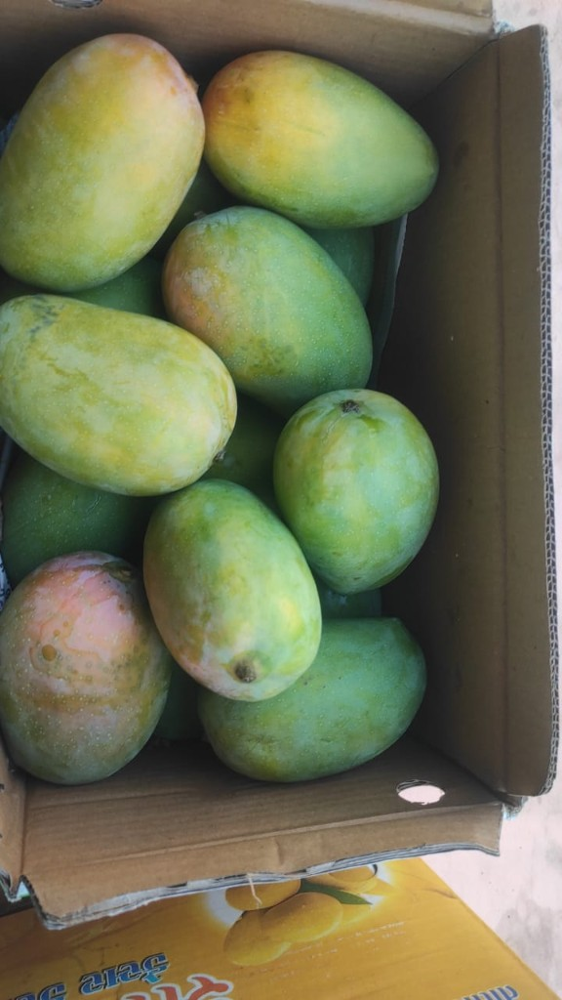
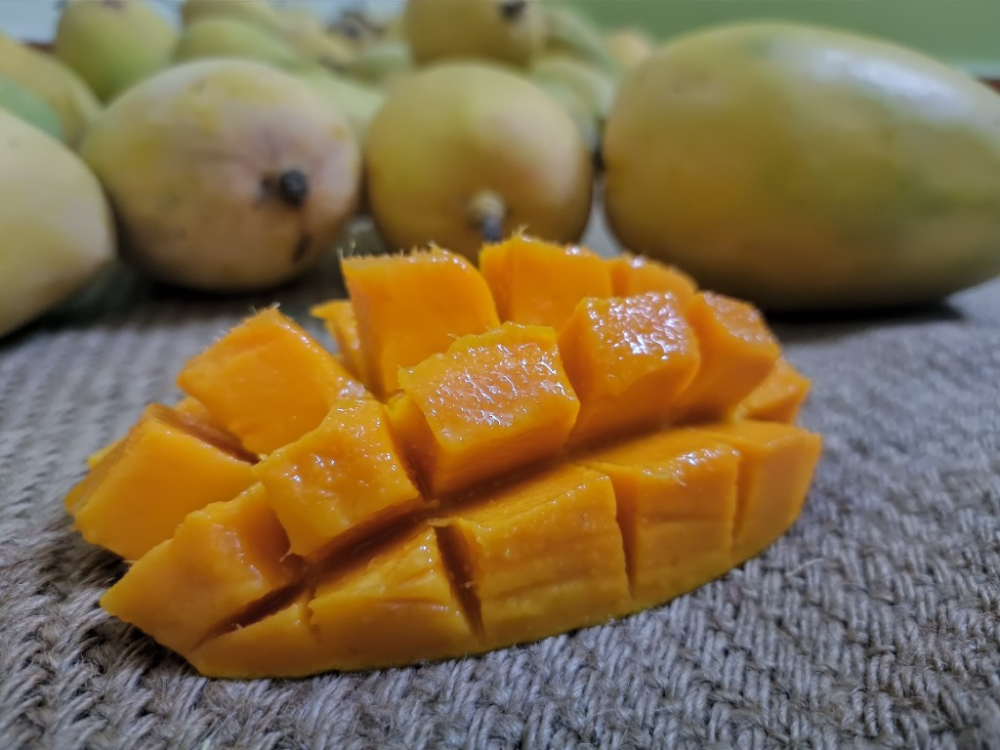
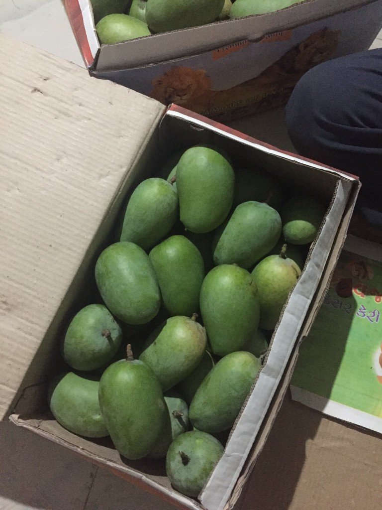
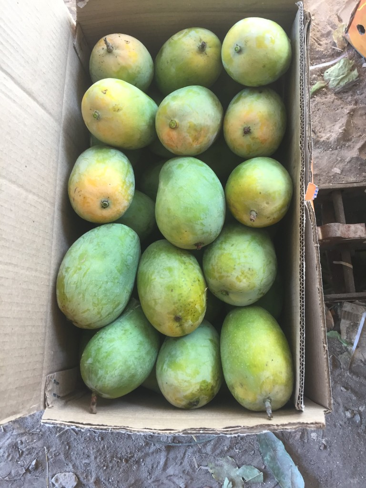

Most Popular

Grade A — Premium
Largest size, extra sweet. Perfect for gifting and special occasions.
- Extra large size (300g+ each)
- Maximum sweetness
- Premium gift-worthy packing
Experience the authentic taste of world-famous Gir Kesar — chemical-free, naturally ripened on tree, hand-picked at peak sweetness
Delivery across India • Season: April to June • Farm-fresh packing
For Those Who Know Real Gir Kesar
KP Mango is a family-owned mango orchard nestled in the heart of Jamvala Gir, Gujarat — the birthplace of authentic Kesar mangoes. Our farm has been cultivating premium Gir Kesar mangoes for over two decades, following traditional organic methods passed down through generations.
Located in the Gir region, known worldwide for its unique climate and soil that gives Kesar mangoes their distinctive golden color, rich aroma, and unmatched sweetness. Our mangoes carry the prestigious GI (Geographical Indication) Tag, certifying their authentic origin.

Premium Gir Kesar in multiple grades — choose based on your preference for size and sweetness.

Largest size, extra sweet. Perfect for gifting and special occasions.

Medium size, great taste. Ideal for daily family consumption.

Smaller size, same authentic taste. Great for making pulp, shakes & desserts.
What makes our Gir Kesar mangoes special
No synthetic pesticides, fertilizers, or growth hormones. Pure organic farming.
Mangoes ripen naturally on the tree. No artificial carbide or chemical ripening.
Harvested only when fully mature for maximum sweetness and authentic aroma.
Certified Geographical Indication tag ensures you get genuine Gir Kesar.
Packed within hours of harvest. Cushioned boxes ensure mangoes arrive perfect.
Fast shipping to 50+ cities. Track your order from farm to doorstep.
Traditional wisdom meets sustainable agriculture — how we grow the best Kesar mangoes
We use only natural compost, cow dung manure (from desi cows), and vermicompost. No chemical fertilizers touch our soil.
Our farm maintains Gir cows whose urine and dung provide natural pest control and soil enrichment — traditional Vedic farming.
Neem oil, garlic spray, and beneficial insects keep pests away naturally. Zero synthetic pesticides used.
Water-efficient drip irrigation ensures each tree gets optimal hydration without wastage.
Each mango is hand-picked at the right maturity. No machine harvesting that damages fruit.
Mangoes are graded and packed on the same day of harvest for maximum freshness.
Gir Kesar is not just delicious — it's packed with nutrients
Boosts immunity and helps fight infections. One mango provides 60% of daily Vitamin C needs.
High in Vitamin A and beta-carotene, essential for healthy vision and eye health.
Natural enzymes like amylase help break down food and improve gut health.
Contains potassium and magnesium that help maintain healthy blood pressure.
Antioxidants and Vitamin E promote healthy, glowing skin and reduce aging signs.
Natural sugars provide instant energy without the crash of processed foods.
Make the most of your Gir Kesar mangoes with these popular recipes
Blend ripe Kesar mango with yogurt, sugar, and cardamom for a refreshing summer drink.
Traditional Indian ice cream made with Kesar mango pulp, milk, and saffron.
Classic Gujarati dessert — pure mango pulp served with hot puris. A seasonal favorite!
Creamy hung curd mixed with fresh mango pulp and flavored with cardamom.
Simple 3-step process — from our farm to your home
Select grade (A/B/C) and box size (5kg or 10kg) based on your preference.
Message us on WhatsApp or call with your order details and delivery address.
We harvest, pack, and ship within 24 hours. Receive at your doorstep in 2-4 days.
Mumbai • Delhi • Bangalore • Chennai • Hyderabad • Ahmedabad • Pune • Kolkata • Surat • Jaipur • Lucknow • and 50+ more cities across India
Join 1000+ happy families who trust KP Mango
★★★★★"Best Kesar mangoes I've ever tasted! The sweetness and aroma reminded me of my childhood in Gujarat. Will definitely order again next season."
Meera K
★★★★★"Ordered Grade A for gifting. Everyone was impressed with the quality. No comparison to supermarket mangoes!"
Rajesh P
★★★★★"Finally found a farm that delivers genuine chemical-free mangoes. My kids love them. The taste is pure and natural."
Sunita S
★★★★★"Prompt delivery and excellent packing. Not a single mango was damaged. The freshness is unmatched."
Amit J
Gir Kesar mango season typically runs from mid-April to mid-July. Peak harvest is in May-June when mangoes are at their sweetest. We start accepting pre-orders from March.
Our mangoes are 100% organic, tree-ripened, and chemical-free. Market mangoes are often artificially ripened using carbide chemicals. We harvest only mature mangoes that ripen naturally, giving authentic taste and aroma.
Keep mangoes in the box at room temperature for 2-4 days. They will ripen naturally. Do not refrigerate unripe mangoes. Once ripe (soft to touch, fragrant), you can refrigerate for 2-3 days.
We pack mangoes with utmost care using cushioned boxes. In the rare case of damage, send us photos within 24 hours of delivery, and we'll replace or refund the damaged mangoes.
Yes! We deliver to all major cities across India including Mumbai, Delhi, Bangalore, Chennai, Hyderabad, Pune, Kolkata, and 50+ more cities. Delivery takes 2-4 days depending on location.
Minimum order is 5 kg box. We also offer 10 kg boxes which provide better value. For bulk orders (50kg+), contact us for special pricing.
We accept UPI, Google Pay, PhonePe, Bank Transfer, and Cash on Delivery (available in select cities). Payment details are shared after order confirmation.
Ready to taste authentic Gir Kesar? Get in touch!
Send your order with box size, grade, quantity, and delivery address.
Chat on WhatsAppKP Mango Farm
Jamvala Gir, Gir Somnath District
Gujarat - 362150, India